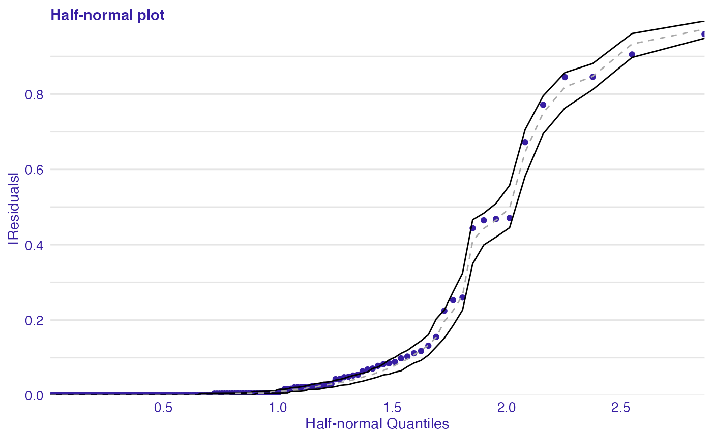

vignettes/model_fit_audit.Rmd
model_fit_audit.RmdThe half-normal plot presented in this vignette is one of the tools designed to evaluate the goodness of fit of a statistical model. It is a graphical method for comparing two probability distributions by plotting their quantiles against each other.
Points on the plot correspond to ordered absolute values of model diagnostic (i.e. standardized residuals) plotted against theoretical order statistics from a half-normal distribution.
There are various implementations of half-normal plots in R. Functions for generating such plotes are available in for example in hnp and faraway packages. Some functions can only draw a simple half-normal plot, while some have additional functionalities like a simulated envelope and score of goodness-of-fit.
We demonstrate the use of half-normal plots for a generalized linear models. We will use dataset corn from the hnp package. For more details on the data set and models see Moral, R., Hinde, J., & Demétrio, C. (2017). Half-Normal Plots and Overdispersed Models in R: The hnp Package.
By default, deviance residuals were used as diagnostic values.
## extract m y
## 1 leaf 35 26
## 2 leaf 36 25
## 3 leaf 38 21
## 4 leaf 38 18
## 5 leaf 39 30
## 6 leaf 38 8Function plot_halfnormal() offers a plotting interface for half-normal plots generated by hnp package in a unified style using ggplot2. Additional functionalities not included in the hnp are scores and the possibility to draw half-normal plot on a quantile scale.
If diagnostic values are from the normal distribution, they are close to a straight line. However, if they don’t come from a normal distribution, they still show a certain trend. Simulated envelopes can be used to help verify the correctness of this trend. For a well-fitted model, diagnostic values should lay within the envelope.
First step of auditing is fitting a model and creating an explainer object with DALEX package which wraps up a model with meta-data.
set.seed(123) model_bin <- glm(cbind(y, m - y) ~ extract, family = binomial, data = corn) bin_exp <- DALEX::explain(model_bin, data = corn, y = corn$y)
Second step is creating model_halfnormal() object that can be further used for validating a model.
library(auditor) bin_hnp <- model_halfnormal(bin_exp)
## Binomial modelHalf-normal plots work also for classification tasks. In this case we consider the differences between observed class and predicted probabilities to be residuals.
library(randomForest) iris_rf <- randomForest(Species ~ ., data = iris) iris_rf_exp <- DALEX::explain(iris_rf, data = iris, y = as.numeric(iris$Species) - 1) iris_rf_hnp <- model_halfnormal(iris_rf_exp) plot_halfnormal(iris_rf_hnp)

Moral, R., Hinde, J., & Demétrio, C. (2017). Half-Normal Plots and Overdispersed Models in R: The hnp Package. Journal of Statistical Software, 81(10), 1-23. doi:http://dx.doi.org/10.18637/jss.v081.i10